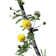

Plant Grimoire

CassieCassie (Acacia farnesiana) belongs to the Mimosaceae family.
Description
A bushy thorny shrub, much branched, up to 10 metres high. It has a very delicate appearance, similar to mimosa, with fragrant fluffy yellow flowers.
Distribution
Believed to be a native of the West Indies, now widely cultivated in tropical and semi-tropical regions throughout the world: mainly southern France and Egypt, also Lebanon, Morocco, Algeria, and India.
Other Species
There are over 400 known species of acacia. Other similar species are found in Central Africa, Zaire, and Australia. Closely related to mimosa (A. dealbata) and Roman cassie (A. cavenia), which are also used for the production of essential oils. Not to be confused with opopanax or bisabol myrrh (Commiphora erythrea) although they share a common name.
Folk Tradition
In India a local "attar of cassie" is made as a perfume. The fresh flowers are used in baths for dry skin, and in the form of an infusion. In Venezuela the root is used for treating stomach cancer. In China it is used to treat rheumatoid arthritis and pulmonary tuberculosis. There are many types of acacia employed in herbal medicine, notably the Senegal acacia which yields a gummy exudation from the trunk known as gum arabic or gum acacia, mainly used as a demulcent.
Cassie Absolute
For the absolute drawn from the flowers, see  Cassie Absolute.
Cassie Absolute.